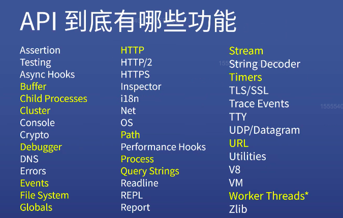

// 官方文档
// 民间文档 https://devdocs.io/
// api有哪些功能
// buffer 一小段缓存
// 基础 - web - 框架
// 以任务为导向
// 基础 - 模块 - web 数据库 ajax
// 最后是框架 以项目为导向
// 以 express为切入点 制作完整的网站
// 记笔记 写博客
// CRM 学习法
// copy run modify
// 学习调试工具和思路
// 问答
// 东京大学笔记法
//
